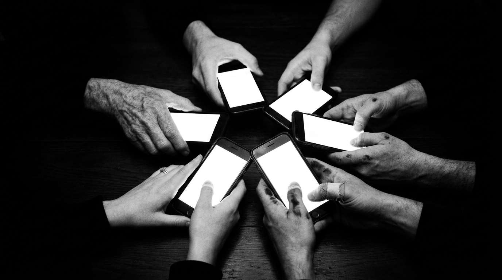

كيف يصنعون الترند ثم يطلبون منك أن تصدّقه؟
«إذا أردت تحرير وطن، فضع في مسدسك عشر رصاصات؛ استخدم واحدة للعدو الخارجي وتسعاً للخونة من أهل الوطن»
— تُنسب إلى تشي غيفارا
لا أتحدث عن الرصاص بمعناه الحرفي، بل عن الفكرة في جوهرها: العدو الخارجي تراه بعينيك، تعرف مكانه، تستطيع أن تحدد موقفك منه. أما الأخطر، فهو من يخوض معركته داخل وعي المجتمع ذاته، متنكراً في زي الحرية وعباءة المعارضة.
منذ فترة نشرت فيديو بعنوان «تغييب العقول وصناعة الخوف»، وطلب مني كثير من المتابعين الاستمرار في هذا النوع من التوعية. لأن معركة السوريين اليوم ليست فقط معركة بناء دولة فوق ركام، بل هي أيضاً معركة وعي فوق رماد الشك.
والشك سلاح مزدوج: يستطيع في يد الواعي أن يكون أداة نقد حقيقي يُحاسب ويكشف ويصحح. لكنه في يد من يُتقن توظيفه، يتحول إلى بنية هدم صامتة تعمل في الخفاء، تُضعف الثقة قبل أن تبدأ المعركة أصلاً.

راقبوا الترندات التي تغزو السوشيال ميديا. ليست حوادث عشوائية، ولا زوابع تنشأ من الفراغ. ثمة بنية تشتغل بصمت خلف الواجهات اللامعة، تُحكم توقيتها، وتختار ضحاياها.
قصة تبدأ بلا دليل واحد — خبر مجهول المصدر، رواية يتيمة تُلقى في الفراغ، غالباً بلا اسم ولا توقيت محدد.
تتكرر مئات المرات — يُعاد نشرها، يُضاف إليها، تُكتسب طبقات من الوهم حتى تبدو وقائع راسخة في الذاكرة الجماعية.
ثم تتحول إلى «حقيقة» — لأن التكرار بنية سلطة، وكثرة التداول لم تكن يوماً دليلاً على الصدق.
وبعدها تبدأ المرحلة الأخطر من هذه الحرب الصامتة: اغتيال المصداقية.
هذه هي آلة الاغتيال المصداقياتية في أبسط تشريحاتها:
كل من يدعم خطوة ناجحة للحكومة
«مُطبِّل»
كل من يدافع عن مؤسسات الدولة
«منتفع»
كل صاحب علاقات أو موقع مؤثر
«مأجور»
كل من يرفض ركوب موجة التشكيك
سمعته ستكون الهدف القادم
وهكذا لا يعود السؤال الجوهري: هل المعلومة صحيحة أم كاذبة؟ بل يصبح المطلوب إسقاط الشخص أولاً، حتى لا يسمع الناس ما يقوله أصلاً. إسكات الصوت قبل بدء النقاش، لأن النقاش نفسه قد يفضي إلى إجابات لا تريدها الجهة المُحرِّكة.
هذه إحدى أخطر وسائل تغييب العقول: لا تناقش الفكرة — دمّر مصداقية صاحبها، وستكون قد أغلقت الباب دون أن تضطر إلى تقديم دليل واحد ضد ما قاله. المصداقية المُخترَقة لا تحتاج إلى محاكمة.
انتقدوا الحكومة، حاسبوها، واكشفوا أخطاءها بالدليل. هذا حقكم وحقنا جميعاً. لكن لا تسمحوا بتحويل «حرية التعبير» إلى مصنع للإشاعات، ولا «الترند» إلى محكمة لا استئناف فيها.
ثمة ثلاثة أسئلة تستحق أن تُسأل. ليست أسئلة تشكيك في كل شيء — بل هي أسئلة صاحب عقل يرفض أن يكون وقوداً في معركة لا يعرف من أشعلها.
أين الدليل؟
من المستفيد من خوفي؟
من المستفيد من فقداني الثقة بدولتي؟
ولا «الترند» إلى محكمة، ولا كثرة التكرار إلى دليل. لأن هذه الطرق جميعها أسلحة مشتركة بين كل من أراد يوماً إجهاض بناء أمة وهي لا تزال في مرحلة تشكّلها الأكثر هشاشة وعرضة للاختراق.
بل وعي السوريين وثقتهم
بقدرتهم على بناء دولتهم من جديد.